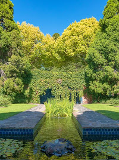
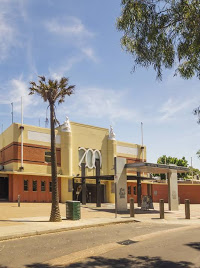
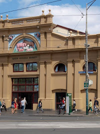

One of the next places I'd like to visit is Melbourne, Australia. I lived in Sydney briefly but my partner and I were too busy with work to travel much within the country. Ive heard that Melbourne is much more "artsy" and creative compared to Sydney. So, here are some things I'd like to see:
In Sydney, the Royal Botanic Gardens are next to the Opera House--which is pretty neat! But I also love zoos, so I would like to go here first.

The Royal Melbourne Zoological Gardens, commonly known as the Melbourne Zoo, is a zoological park in Melbourne, Australia. It is located within Royal Park in Parkville, approximately 4 kilometres north of the centre of Melbourne. It is the primary zoo serving Melbourne.
Like I said above, I like zoos, so after the gardens I'd want to spend the rest of the day here.

The Royal Melbourne Zoological Gardens, commonly known as the Melbourne Zoo, is a zoological park in Melbourne, Australia. It is located within Royal Park in Parkville, approximately 4 kilometres north of the centre of Melbourne. It is the primary zoo serving Melbourne.
Queen Victoria is everywhere in Australia. In Sydney they have the Queen Victoria Building (QVB) which was one of my frequent shopping destinations and also a main train station in it. I imagine this is similarly awesome.

The Queen Victoria Market is a major landmark in Melbourne, Australia, and at around seven hectares is the largest open air market in the Southern Hemisphere. The Queen Victoria Market is the largest and most intact surviving 19th century market in the city.